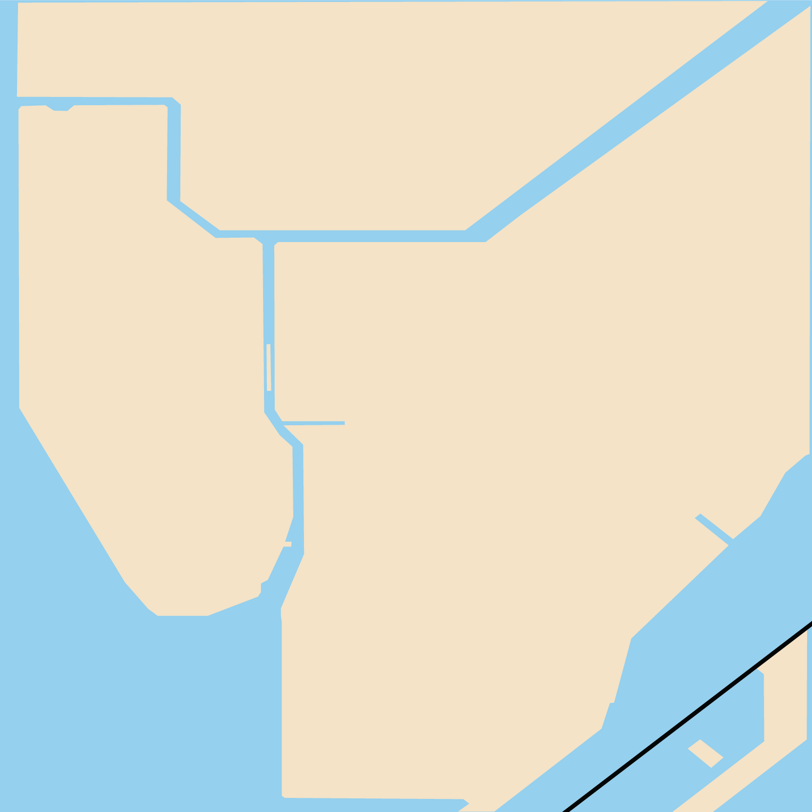
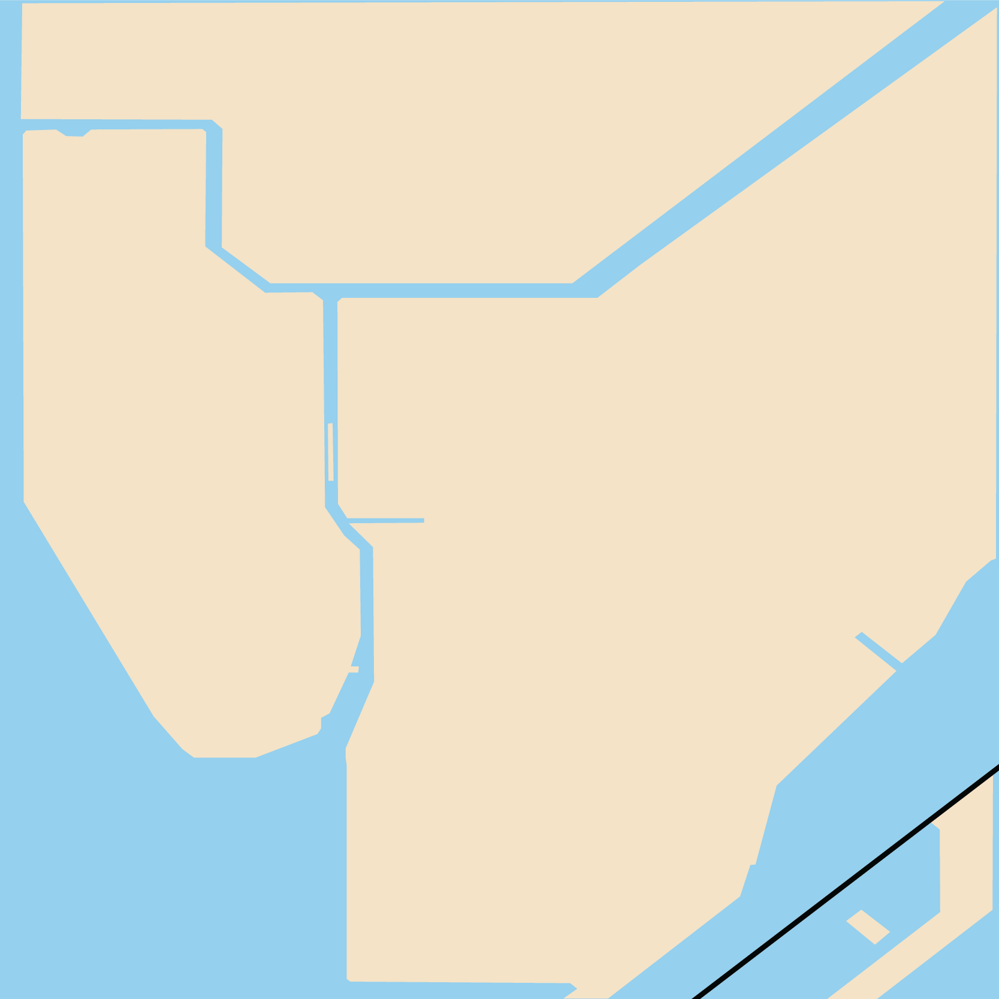

4
The 4 train opened on June 2, 1917, running along the IRT Jerome Avenue Line between 149th Stree - Grand Concourse and Kingsbridge Road. The following year, the Jerome Avenue Line was extended to terminate in Woodlawn in the Bronx, which is where the 4 currently terminates service. In 1925, the southern portion of the line was extended from Atlantic Avenue to Utica Avenue in Brooklyn. The service the train ran in 1934 was as follows:
Woodlawn to Utica Avenue - weekday rush and Saturday morning peak and afternoon;
Woodlawn to Atlantic Avenue - weekday midday, Saturday morning post-peak (after 1938, it would run to Utica Avenue again);
Woodlawn to South Ferry - evenings and Sundays.
The line currently runs between Woodlawn, the Bronx, to Crown Heights - Utica Avenue, Brooklyn.
5
The 5 line used to be part of the New York, Westchester, and Boston Railway between E 180th Street to Dyre Avenue until it closed in 1937. The line now runs on the IRT Lexington Avenue Line as the Lexington Avenue Express. Starting on April 28, 1930, the 5 ran to Crown Heights - Utica Avenue during Saturday service. In 1934, the route changed to have the northern terminals end service either at Wakefield - 241st Street or E 180th Street and the southern terminal end at Atlantic Avenue - Barclays Center. During the spring of 1955, rush hour service for the 5 terminated at 238th Street, allowing only the 2 to continue up to 241st Street to avoid the congestion of having both lines end at the same station. In 2009, the southern terminal was extended from Bowling Green in Manhattan to Flatbush Avenue, connecting the 2 and the 5 lines in the Bronx and Brooklyn.
6
The 6 has two variants: the (6) train and the <6> train (connoted by a diamond bullet rather than a circular one). The <6> train would run on the weekdays in peak direction, replacing the regular 6 service north of Parkchester. On October 27, 1904, the IRT Lexington Line opened, running between City Hall and Grand Central - 42nd Street. After reaching Grand Central, the 6 would run west from 42nd Street, then up along the IRT Broadway - 7th Avenue Line (the 1, 2, and 3 trains’ line) up to 145th Street. In 1920, northern service was extended to Pelham Bay Park in the Bronx. In 1945, the New York City Board of Transportation was in charge of all the subway lines, and on December 31, they closed down the City Hall station and ran the 6 to the Brooklyn Bridge Station instead.
 
